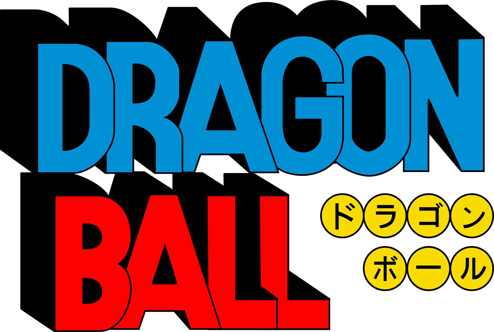
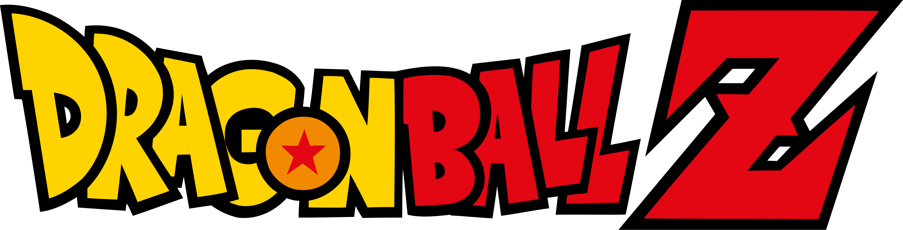
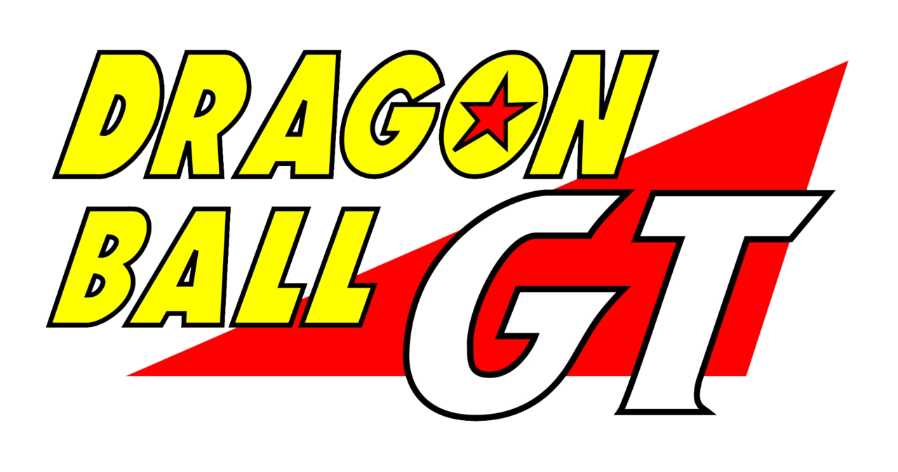

Dragon Ball (1986)
Fecha de lanzamiento: 26 de febrero de 1986
Resumen: La serie original que narra las infancias de Goku tras conocer a Bulma. Juntos emprenden un viaje para reunir las mágicas Esferas del Dragón. A lo largo de la historia, Goku entrena bajo la tutela del Maestro Roshi, participa en los Torneos Mundiales de Artes Marciales y se enfrenta a peligrosas amenazas como la Patrulla Roja y el temible Rey Demonio Piccolo Daimaku.
Personajes clave: Goku (niño), Bulma, Maestro Roshi, Krilin, Yamcha, Oolong, Puar, Ten Shin Han, Piccolo Daimaku.

Dragon Ball Z (1989)
Fecha de lanzamiento: 26 de abril de 1989
Resumen: Situada cinco años después del final de la serie anterior, revela el origen extraterrestre de Goku como un Saiyajin. La trama da un giro hacia la ciencia ficción y las batallas a escala cósmica, dividiéndose en grandes sagas donde los Guerreros Z defienden la Tierra de tiranos espaciales, androides asesinos y monstruos ancestrales en combates de alto impacto.
Personajes clave: Goku, Vegeta, Gohan, Piccolo, Krilin, Trunks del Futuro, Freezer, Cell, Majin Boo.

Dragon Ball GT (1996)
Fecha de lanzamiento: 7 de febrero de 1996
Resumen: Una historia exclusiva para el anime que se sitúa años después del final de Dragon Ball Z. Debido a un deseo accidental con unas esferas corruptas, Goku vuelve a ser un niño. Para salvar a la Tierra de la destrucción, debe viajar por todo el universo junto a su nieta Pan y Trunks para recolectar las esferas malditas, enfrentando las consecuencias del uso excesivo de la magia.
Personajes clave: Goku (niño/SSJ4), Pan, Trunks, Gill, Baby, Super 17, Dragones Oscuros (Omega Shenron).

Dragon Ball Super (2015)
Fecha de lanzamiento: 5 de julio de 2015
Resumen: Situada tras la derrota de Majin Boo y continuando la línea cronológica oficial de Akira Toriyama. La serie expande el universo conocido al introducir el concepto de los Dioses de la Destrucción, los Ángeles y la existencia de múltiples universos paralelos. Los protagonistas alcanzan transformaciones divinas y compiten en torneos multiversales por la supervivencia de su propio mundo.
Personajes clave: Goku, Vegeta, Bills, Wiss, Zen-Oh, Goku Black, Hit, Jiren, Broly.